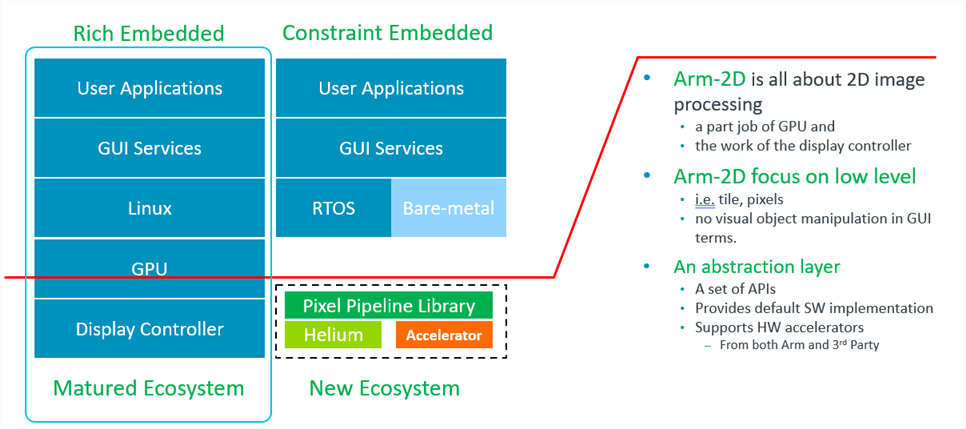
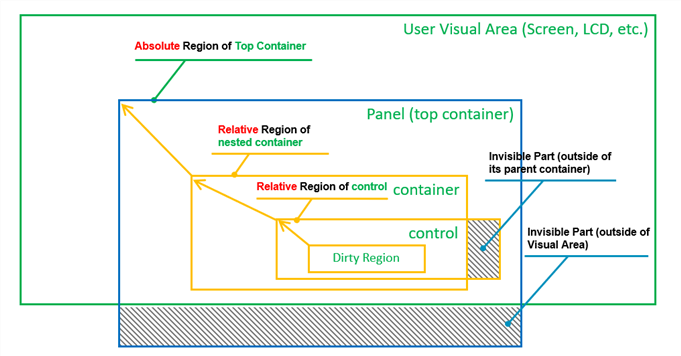

|
Arm-2D
2D Image Processing Library for Cortex-M Processors
|


|
|
Arm-2D
2D Image Processing Library for Cortex-M Processors
|
|
This document explains the basic concepts of Arm-2D. It doesn't matter whether you have read the README in the root directory. The content is suitable for everyone.
At the beginning of our adventure, you might have a lot of questions, such as
You will find the answers in the following sections.
If you want to design GUI applications in Linux, you don’t have to face hardware directly. The Linux ecosystem provides you with all necessary software components, including GPU drivers, GUI stacks and many handy reference designs.
Unfortunately, if you are an embedded developer using Cortex-M devices, you must face various display hardware directly. Even worse, you might face various non-standard 2D graphics accelerators from different silicon vendors. Many GUI stacks are available for embedded applications, but most of them are not ready for your target device immediately. As a result, you have to do the porting work first. In summary, using GUI in the Cortex-M system is feasible, but there is a lot of low-level work beforehand.
Figure 1-1 Ecosystem Comparison between Rich Embedded and Constraint Embedded System in GUI

Arm-2D is not about reinventing a GUI or competing with the existing GUI stacks. The problem Arm-2D wants to solve is how to provide a unified low-level hardware acceleration interface for all GUI stacks so that high-level software service providers are freed from writing drivers for endlessly emerging non-standard hardware. Once Arm-2D becomes a bridge between GUI providers and chip manufacturers, everyone can do their best.
Figure 1-2 The Hierarchy of a Typical Embedded GUI System.

Arm-2D focuses on low-level 2D image processing and provides a unified software interface for the various 2D accelerators.
There are three types of participants in arm-2d: GUI service providers, silicon vendors, and embedded software developers.
GUI service providers can benefit from Arm-2D, which provides a standard interface for commonly used hardware acceleration. GUI service providers can use Arm-2D to get low-level acceleration by default. As a result, they are freed from writing drivers for hardware; and concentrate on improving the software and providing customisation services for their VIP customers.
Semiconductor manufacturers can benefit from Arm-2D. To save the efforts of learning new architectures, programmers want to use microcontrollers under the same architecture, and in most cases, that means using Cortex-M processors. Since devices use the same processor architecture, semiconductor manufacturers are motivated to introduce proprietary peripherals for differentiation. Introducing dedicated accelerators for 2D graphics has become the new trend. While differentiation in hardware brings benefits to end-users, it also inevitably introduces the problem of software fragmentation. Introducing a hardware abstract layer to mitigate the issue is common practice in software engineering. Arm-2D is such an abstract layer for various 2D graphic accelerations.
In an ideal condition, chip manufacturers only need to implement arm-2d compliant drivers for their hardware accelerators, and this is sufficient to get support from the mainstream GUI stacks.
Most embedded software developers use devices with constrained resources. A typical system has less than 64KB FLASH and 4~32K SRAM. As a reference, a standard low-cost serial LCD (320*240 resolution and 65K colour) requires 150KB RAM for the display buffer, which is unaffordable.
Also, for such microcontrollers, most of the existing GUI stacks are too expensive to use in terms of memory footprint. On the other hand, many GUI applications are so simple that even some home-brew implementations are good enough to fulfil the requirements. In such cases, most existing GUI stacks are too heavy.
When one wants to build a GUI-based application from scratch with such resource-constrained microcontrollers, you either completely give up the idea of GUI or make trade-offs among the following options:
In conclusion, in the past, it was hard to implement a modern-looking GUI in a bare-metal environment. And now, Arm-2D provides a series of easy-to-use APIs to help users implement desired graphic effects using the so-called Partial-Frame-Buffer helper service. It is worth mentioning that the PFB-backed design paradigm introduced by Arm-2D is transparent to upper-layer software, which dramatically simplifies the application development in a bare-metal environment, i.e. users can design applications as if there is a full frame buffer.
In summary, Arm-2D enables many devices (traditionally unsuitable for modern-looking GUI) to implement a modern-looking GUI with a small memory footprint.
As a starting point, Arm-2D provides a default software implementation for all algorithms. These software implementations are mainly written in the C language and occasionally include some local assembly acceleration. This ensures that Arm-2D can be used directly on all Cortex-M processors without modification.
If you are using an Armv8.1-M processor, such as Cortex-M55, as long as you enable Helium support with compilation options, Arm-2D library will automatically use Helium technology for acceleration.
Arm-2D has provided standard ways to add support for various third-party hardware accelerators. Although not included now, In the future, we will introduce templates, examples and documents to show how to add support for third-party hardware accelerators.
Arm-2D has provided standard ways to add support for 2D image processing algorithms accelerated with customised instructions. Although not included now, In the future, we will introduce templates, examples and documents to show how.
NOTE: For the temporary limitations in current version, please check section 5.2 in README for details.
Table 1-1 Summary of Operation Categories.
Table 1-2 The Folder Structure of Arm-2d Root
| Folder and File | Type | Description |
|---|---|---|
| Library | Folder | This folder contains the source files and header files of the library. |
| Helper | Folder | This folder contains the source files and header files of helper functions / services. |
| documentation | Folder | This folder contains all the documents. |
| examples | Folder | This folder contains all the example code / projects. |
| README | .md | The README.md you are currently reading. |
| how_to_deploy_the_arm_2d_library | .md | A step by step guidance helping you to deploy the Arm-2D library to your projects. |
| LICENSE | License | The Apache 2.0 License |
| tools | Folder | This folder contains some useful utilities for using the library. For example, img2c.py is a python script that convert a specified picture into the tile data structure. |
Arm-2D defines some basic data structures for ease of use, providing a unified description method for various graphic resources and simplifying the parameters that need to be passed to 2D processing APIs. This chapter will introduce some basic concepts and corresponding data structures that you must know to work with the Arm-2D library. Arm-2D systematically introduces a Boxing Model to provide more sophisticated and easy to use 2D graphics operations.
Region is a rectangular area described by the Location (the coordinates of the upper left corner) and the Size information.
**Figure 2-1 Region with Location and Size **

The coordinate of the Region is defined by the vertices at the upper left corner of the bit rectangle. Its data structure is as follows:
Different from the general Cartesian coordinate system, in graphics, the Y-axis is usually mirrored in the opposite direction, which means that the lower the Y coordinate is, the larger the Y coordinate is. In the Boxing model that will be introduced later, we will understand that the coordinates of a Region can be negative, representing the position of the current Region relative to the starting point of its parent Region.
Figure 2-2 When Location has a negative coordinates.

As shown in Figure 2-2, when the x and y coordinates of a Region are both negative, it actually has a considerable area outside (upper left corner) of its parent Region. When we try to find the intersection of the current Region and its parent Region, we will find that only part of the region is valid.
The size information of the Region is described by the Height and Width together. The data structure is defined as follows:
Although a signed type int16_t is used to describe the width and height, negative numbers are meaningless and should be avoided.
The so-called Boxing Model describes the affiliation between Regions, which is often used to describe the relationship between containers and visual elements.
In a GUI stack, the Boxing Model usually talks about more complex stuff, such as the border's width, the margin inside a container border, the padding of / distance between the elements inside a container etc. Arm-2D does NOT cares about these details but only describes the simple relationship between a container and the elements inside.
In Arm-2d, we consider panels or windows as containers, and the Locations of the panels and the windows are their coordinates in the display buffer. We call this kind of location information that directly describes the coordinates in a display buffer as an Absolute Location. In Figure 2-3, the panel (top container) coordinates are absolute coordinates.
The coordinates of the elements inside a container are described as coordinates relative to the upper left corner of the parent container. We call this kind of Locations the Relative Locations. In addition to that, since the container is only a special element, container nesting becomes possible. In Figure 2-3, the two innermost Regions have Relative Locations.
Figure 2-3 A Typical Example of Absolute Locations and Relative Locations

If a Region has absolute Location, it is an Absolute Region; similarly, if a Region has relative Location, it is a Relative Region.
Figure 2-4 A Typical Example of Absolute Regions and Relative Regions

When we use these relative and absolute information to perform visual area calculations, it is easy to exclude those areas that are actually invisible to the user from various graphic operations, thereby improving the overall 2D processing performance (as shown in Figure 2-4 ).
Tile is the smallest unit of various 2D operations in Arm-2D. The Tile data structure consists of three parts:
The C definition of a the Tile data structure is shown below:
**Table 2-1 The Functionality of Each Members In *arm_2d_tile_t***
| Member | Category | Type | Description | Note |
|---|---|---|---|---|
| bIsRoot | Feature Info | bit-field | This bit indicates that whether a tile is a root tile or not. If it is "***1***", the target tile is a root tile that contains a pointer pointing to a display buffer. If it is "***0***", the target tile is a child tile that contains a pointer pointing to a parent tile which NOT necessarily to be a root tile. | See section 2.3.1 and 2.3.2 for details. |
| bHasEnforcedColour | Feature Info | bit-field | This bit indicates that whether a tile explicitly contains a descriptor for pixel colour. When this bit is set, tColourInfo is valid; otherwise, it is seen as containing no valid information. If a Tile is used as the source tile of any Colour Conversion Operations, this bit has to be set and tColourInfo should contain a valid description. | For most of the Arm-2d operations, when this bit is zero, arm-2d API will use its own implicit understanding about the tile colour. For example, arm_2d_rgb16_tile_copy() has describe its implicit colour, i.e. RGB16 in function name, hence even bHasEnforcedColour is set and tColourInfo contains valid information, the operation still considers both the source and target tiles using RGB16. |
| bDerivedResource | Feature Info | bit-field | This bit indicates whether a child tile is used as a resource. | When creating a resource from a existing tile, you must set this bit to "1". It is only valid when bIsRoot is "0". |
| tColourInfo | Feature Info | arm_2d_color_info_t | When bHasEnforcedColour is set, tColourInfo should contain a valid descriptor about the colour used in the target Tile. | See section 2.4 for details. |
| tRegion | Region | arm_2d_region_t | Depends on the type of a given tile, tRegion has a different meaning. | See section 2.3.1 and 2.3.2 for details. |
| ptParent | Pointers | arm_2d_tile_t * | When bIsRoot is "***0***", this pointer is used to point the parent tile. | See section 2.3.1 for details. |
| phwBuffer | Pointers | uint16_t * | When bIsRoot is "***1***", this pointer is used to point to a display buffer that contains 16-bit pixels. | See section 2.3.1 for details. |
| pwBuffer | Pointers | uint32_t * | When bIsRoot is "***1***", this pointer is used to point to a display buffer that contains 32-bit pixels. | See section 2.3.1 for details. |
| pchBuffer | Pointers | uint8_t * | When bIsRoot is "***1***", this pointer is used to point to a display buffer that contains pixels that have less or equals to 8bits. | See section 2.3.1 for details. |
[]:
A Root tile is a kind of tiles that directly contain the display buffer, and its feature bit bIsRoot is set, according to the pixel types used in the display buffer to which corresponding pointers should be used. For more details, please refer to Table 2-1.
It is worth emphasizing that for a root Tile, its Location coordinate must be (0,0); otherwise, it is considered illegal.
With the help of C99 designator, a tile structure can be initialised clearly and easily. The following example shows a root tile c_tPictureCMSISLogo representing a RGBA8888 bitmap stored in a constant array called c_bmpCMSISLogo[]. Note that because the bitmap and the tile structure are designated as constants, it is highly likely that a compiler will use ROM rather than RAM to store them and keep a small RAM footprint.
In fact, with the help of some macros, we can use Tile to implement the concept of the so-called visual layer:
For example, we can create two visual layers with size 100*100 and 200*50 respectively and using colour arm_2d_color_rgb565_t for pixels:
These layers are stored in RAM, which are used as sources and targets for 2D operations.
Note that in the aforementioned macro template, we use ARM_NOINIT to decorate the display buffer, its definition is shown below:
It is clear that for the Arm Compiler 5 and Arm Compiler 6, ARM_NOINIT puts the target variable into a ZI section called .bss.noinit which later should be placed in an execution region with UNINIT feature in a scatter-script, for example:
Given any tile, we can derive a theoretically unlimited number of sub-tiles based on it, which are called Child Tiles in Arm-2D. It is worth emphasizing that the Tile that can be used to derive child tiles does not need to be a root Tile. The bIsRoot flag of the Child Tile is 0, which means that the pointerptParent points to its parent Tile.
The Location information of the child tile is used to indicate its location in the parent tile. Negative numbers are allowed for the coordinates here. The region of a child tile can be larger than the size of the parent tile. This is often used to implement the Partial Frame-buffer. For more, please refer to section 2.3.3.
Figure 2-3 shows a series of Child Tiles, and their derivation relationship in the form of Region View.
Figure 2-3 A Chain of Child Tiles and Their Root Tile
The introduction of Child Tiles can greatly simplify the storing and representing of GUI resources. Smart designers can even put many image elements in the same picture and retrieve them by creating Child Tiles with different sizes from different locations. In practice, A multi-level Child Tile suffers almost no performance loss in 2D operations.
The so-called Partial Frame Buffer is a special use of the Tile Child scheme. It establishes a root Tile for a tiny rectangular display buffer and derives a Child Tile having the same size as the actual screen. In practice, the GUI software in the upper layer uses the Child Tile (with the full-screen size) to draw graphics and blend visual layers. After completing a frame, the PFB that actually saves the pixel information is sent to the LCD driver for a flush. Since FPB only covers a small area, the drawing process aforementioned, in most cases, will be judged as "no need for actual drawing" and skipped. To display the entire screen, we need to repeat this process continuously and adjust the relative Location between FPB and the Child Tile at the beginning of each iteration. For us, it looks like moving FPB line by line on the screen as shown in Figure 2-4.
Figure 2-4 How Partial Frame Buffer Works

More details are shown in a dedicated example project located in examples/benchmark directory.
Arm-2D has reserved sufficient space for supporting more colour formats. A data structure has been introduced to describe a colour format used in a given tile. The C definition is shown below:
Table 2-2 The Member of arm_2d_colour_info_t
| Member | Type | Description | Note |
|---|---|---|---|
| bHasAlpha | bit-field | bHasAlpha is used to indicate that whether the target colour format contains an alpha channel or not. Here “***1***†means that the Alpha channel is included, and vice versa. | |
| u3ColourSZ | bit-field | u3ColourSZ is used to indicate the data length of each pixel. The valid values are represented as enumerations starting with " ***ARM\_2D\_COLOUR_SZ\_*** ". | |
| bBigEndian | bit-field | bBigEndian is used to indicate whether the pixel is stored in Big-Endian. | |
| u3Variant | bit-field | In some rare cases that the aforementioned bit fields refer to more than one colour format, the u3Varient can be used to encode at most 8 different variants. | |
| chScheme | uint8_t | An 8bit representation of the bit fields aforementioned. It is very efficient in comparison. Enumerations starting with " ***ARM\_2D\_COLOUR\_*** " represent the colour formats currently supported in the Arm-2D library. For example, ARM_2D_COLOUR_RGB565. |
In addition to the colour format descriptor, the current version of the Arm-2D library also defines data structures for the supported colour formats:
As shown above, arm-2d describes colour format in little-end manner, for example, BGRA8888 means the blue-channel is the 1st byte and the Alpha channel is the 3rd byte. The colour format CCCA8888 means the Alpha channel is the 3rd byte and there are three colour channels whose name and order we don't care. The colour format CCCN888 means the 8 MSB are unused (reserved for alpha) and the lower 3 bytes are used to store colour channels.
Arm-2D APIs can be used in both Synchronous mode and Asynchronous mode. In fact, The Arm-2D library is designed for working asynchronously, and wrappers are added to support synchronous mode.
The Synchronous mode is also known as the classic mode, in which a function call won't return until the service is finished or an error occurred. In the current version of the Arm-2D library, all examples are written in Synchronous mode.
The Asynchronous mode is good for the event-driven design paradigm, and it is suitable for most of the RTOS based applications and applications that are written in protoThread and/or FSM in the bare-metal system.
The examples and documents for Asynchronous mode will be added soon.
| Function Name | Description | NOTE |
|---|---|---|
| arm_2d_is_root_tile | A function used to check whether a given tile is a root tile or not. | |
| arm_2d_region_intersect | A function used to perform region intersection. | |
| arm_2d_is_point_inside_region | A function used to check whether a point is inside a given region or not. | |
| arm_2d_tile_get_root | For a given tile, return its root tile and the valid region inside that root tile. | |
| arm_2d_tile_generate_child | Generate a Child Tile for a given Tile with a target region inside the given tile. | |
| arm_2d_tile_width_compare | compare the widths of two tiles | |
| arm_2d_tile_height_compare | compare the heights of two tiles | |
| arm_2d_tile_shape_compare | compare the shape (both widths and heights) of two tiles | |
| arm_2d_get_absolute_location | calcualte the absolute location in the root tile for a given tile | |
| arm_2d_tile_region_diff | calculate the region differences between two tiles | |
| arm_2dp_c8bit_tile_copy | Copy or Fill a given tile into a target tile. Both tiles should use 8bits for each pixel. | |
| arm_2dp_rgb16_tile_copy | Copy or Fill a given tile into a target tile. Both tiles should use 16bits for each pixel. | |
| arm_2dp_rgb32_tile_copy | Copy or Fill a given tile into a target tile. Both tiles should use 32bits for each pixel. | |
| arm_2dp_c8bit_tile_copy_only | copy a source tile to a given target tile. Both tiles should be 8bit per pixel. | |
| arm_2dp_rgb16_tile_copy_only | copy a source tile to a given target tile. Both tiles should be 16bit per pixel. | |
| arm_2dp_rgb32_tile_copy_only | copy a source tile to a given target tile. Both tiles should be 32bit per pixel. | |
| arm_2dp_c8bit_tile_copy_with_x_mirror | copy a source tile to a given target tile with x-mirroring. Both tiles should be 8bit per pixel. | |
| arm_2dp_rgb16_tile_copy_with_x_mirror | copy a source tile to a given target tile with x-mirroring. Both tiles should be 16bit per pixel. | |
| arm_2dp_rgb32_tile_copy_with_x_mirror | copy a source tile to a given target tile with x-mirroring. Both tiles should be 32bit per pixel. | |
| arm_2dp_c8bit_tile_copy_with_y_mirror | copy a source tile to a given target tile with y-mirroring. Both tiles should be 8bit per pixel. | |
| arm_2dp_rgb16_tile_copy_with_y_mirror | copy a source tile to a given target tile with y-mirroring. Both tiles should be 16bit per pixel. | |
| arm_2dp_rgb32_tile_copy_with_y_mirror | copy a source tile to a given target tile with y-mirroring. Both tiles should be 32bit per pixel. | |
| arm_2dp_c8bit_tile_copy_with_xy_mirror | copy a source tile to a given target tile with xy-mirroring. Both tiles should be 8bit per pixel. | |
| arm_2dp_rgb16_tile_copy_with_xy_mirror | copy a source tile to a given target tile with xy-mirroring. Both tiles should be 16bit per pixel. | |
| arm_2dp_rgb32_tile_copy_with_xy_mirror | copy a source tile to a given target tile with xy-mirroring. Both tiles should be 32bit per pixel. | |
| arm_2dp_c8bit_tile_fill_only | fill the target tile with a given source tile. Both tiles should be 8bit per pixel. | |
| arm_2dp_rgb16_tile_fill_only | fill the target tile with a given source tile. Both tiles should be 16bit per pixel. | |
| arm_2dp_rgb32_tile_fill_only | fill the target tile with a given source tile. Both tiles should be 32bit per pixel. | |
| arm_2dp_c8bit_tile_fill_with_x_mirror | fill the target tile with a given source tile in x-mirroring. Both tiles should be 8bit per pixel. | |
| arm_2dp_rgb16_tile_fill_with_x_mirror | fill the target tile with a given source tile in x-mirroring. Both tiles should be 16bit per pixel. | |
| arm_2dp_rgb32_tile_fill_with_x_mirror | fill the target tile with a given source tile in x-mirroring. Both tiles should be 32bit per pixel. | |
| arm_2dp_c8bit_tile_fill_with_y_mirror | fill the target tile with a given source tile in y-mirroring. Both tiles should be 8bit per pixel. | |
| arm_2dp_rgb16_tile_fill_with_y_mirror | fill the target tile with a given source tile in y-mirroring. Both tiles should be 16bit per pixel. | |
| arm_2dp_rgb32_tile_fill_with_y_mirror | fill the target tile with a given source tile in y-mirroring. Both tiles should be 32bit per pixel. | |
| arm_2dp_c8bit_tile_fill_with_xy_mirror | fill the target tile with a given source tile in xy-mirroring. Both tiles should be 8bit per pixel. | |
| arm_2dp_rgb16_tile_fill_with_xy_mirror | fill the target tile with a given source tile in xy-mirroring. Both tiles should be 16bit per pixel. | |
| arm_2dp_rgb32_tile_fill_with_xy_mirror | fill the target tile with a given source tile in xy-mirroring. Both tiles should be 32bit per pixel. | |
| arm_2dp_c8bit_tile_copy_with_colour_keying | Copy a given tile into a target tile with the Colour-Keying scheme. Both tiles should use 8bits for each pixel. | |
| arm_2dp_rgb16_tile_copy_with_colour_keying | Copy a given tile into a target tile with the Colour-Keying scheme. Both tiles should use 16bits for each pixel. | |
| arm_2dp_rgb32_tile_copy_with_colour_keying | Copy a given tile into a target tile with the Colour-Keying scheme. Both tiles should use 32bits for each pixel. No alpha channel is used in this function. |
| Function Name | Description | NOTE |
|---|---|---|
| arm_2d_convert_colour_to_rbg888 | Convert a tile with any other colour format into a new tile with RGB888. | |
| arm_2d_convert_colour_to_rgb565 | Convert a tile with any other colour format into a new tile with RGB565. |
| Function Name | Description | NOTE |
|---|---|---|
| arm_2dp_gray8_alpha_blending | Blend a source tile to a target tile with a given transparency ratio. Both tiles should use GRAY8 as their colour format. | |
| arm_2dp_rgb565_alpha_blending | Blend a source tile to a target tile with a given transparency ratio. Both tiles should use RGB565 as their colour format. | |
| arm_2dp_cccn888_alpha_blending | Blend a source tile to a target tile with a given transparency ratio. Both tiles should use CCCN888 as their colour format. | |
| arm_2dp_gray8_alpha_blending_with_colour_keying | Blend a source tile to a target tile with a given transparency ratio and the Colour-Keying scheme. Both tiles should use GRAY8 as their colour format. | |
| arm_2dp_rbg565_alpha_blending_with_colour_keying | Blend a source tile to a target tile with a given transparency ratio and the Colour-Keying scheme. Both tiles should use RGB565 as their colour format. | |
| arm_2dp_cccn888_alpha_blending_with_colour_keying | Blend a source tile to a target tile with a given transparency ratio and the Colour-Keying scheme. Both tiles should use RGB888 as their colour format. | |
| arm_2dp_gray8_fill_colour_with_opacity | Fill a given region in the target tile with a specified GRAY8 colour and opacity. | |
| arm_2dp_rgb565_fill_colour_with_opacity | Fill a given region in the target tile with a specified RGB565 colour and opacity. | |
| arm_2dp_cccn888_fill_colour_with_opacity | Fill a given region in the target tile with a specified CCCN888 colour and opacity. | |
| arm_2dp_gray8_fill_colour_with_mask | fill a target tile with a given GRAY8 colour and a mask on target side | |
| arm_2dp_rgb565_fill_colour_with_mask | fill a target tile with a given RGB565 colour and a mask on target side | |
| arm_2dp_cccn888_fill_colour_with_mask | fill a target tile with a given CCCN888 colour and a mask on target side | |
| arm_2dp_gray8_fill_colour_with_mask_and_opacity | fill a target tile with a given GRAY8 colour, a mask on target side and an opacity | |
| arm_2dp_rgb565_fill_colour_with_mask_and_opacity | fill a target tile with a given RGB565 colour, a mask on target side and an opacity | |
| arm_2dp_cccn888_fill_colour_with_mask_and_opacity | fill a target tile with a given CCCN888 colour, a mask on target side and an opacity | |
| arm_2dp_gray8_tile_copy_with_masks | copy or fill a source tile to a target tile with masks in a given mode. Both tiles use GRAY8 as their colour format. | |
| arm_2dp_rgb565_tile_copy_with_masks | copy or fill a source tile to a target tile with masks in a given mode. Both tiles use RGB565 as their colour format. | |
| arm_2dp_CCCN888_tile_copy_with_masks | copy or fill a source tile to a target tile with masks in a given mode. Both tiles use CCCN888 as their colour format. | |
| arm_2dp_gray8_tile_copy_with_des_mask | copy or fill a source tile to a target tile with a mask on the target side in a given mode. Both tiles use GRAY8 as their colour format. | |
| arm_2dp_rgb565_tile_copy_with_des_mask | copy or fill a source tile to a target tile with a mask on the target side in a given mode. Both tiles use RGB565 as their colour format. | |
| arm_2dp_cccn888_tile_copy_with_des_mask | copy or fill a source tile to a target tile with a mask on the target side in a given mode. Both tiles use CCCN888 as their colour format. | |
| arm_2dp_gray8_tile_copy_with_src_mask | copy or fill a source tile to a target tile with a mask on the source side in a given mode. Both tiles use GRAY8 as their colour format. | |
| arm_2dp_rgb565_tile_copy_with_src_mask | copy or fill a source tile to a target tile with a mask on the source side in a given mode. Both tiles use RGB565 as their colour format. | |
| arm_2dp_cccn888_tile_copy_with_src_mask | copy or fill a source tile to a target tile with a mask on the source side in a given mode. Both tiles use CCCN888 as their colour format. |
| Function Name | Description | NOTE |
|---|---|---|
| arm_2dp_gray8_tile_transform_prepare | prepare for a transform in GRAY8 | |
| arm_2dp_rgb565_tile_transform_prepare | prepare for a transform in RGB565 | |
| arm_2dp_cccn888_tile_transform_prepare | prepare for a transform in CCCN888 | |
| arm_2dp_gray8_tile_transform_with_opacity_prepare | prepare for a transform with opacity in GRAY8 | |
| arm_2dp_rgb565_tile_transform_with_opacity_prepare | prepare for a transform with opacity in RGB565 | |
| arm_2dp_cccn888_tile_transform_with_opacity_prepare | prepare for a transform with opacity in CCCN888 | |
| arm_2dp_gray8_tile_transform_with_src_mask_prepare | prepare for a transform with source mask in GRAY8 | |
| arm_2dp_rgb565_tile_transform_with_src_mask_prepare | prepare for a transform with source mask in RGB565 | |
| arm_2dp_cccn888_tile_transform_with_src_mask_prepare | prepare for a transform with source mask in CCCN888 | |
| arm_2dp_gray8_tile_transform_with_src_mask_and_opacity_prepare | prepare for a transform with source mask and opacity in GRAY8 | |
| arm_2dp_rgb565_tile_transform_with_src_mask_and_opacity_prepare | prepare for a transform with source mask and opacity in RGB565 | |
| arm_2dp_cccn888_tile_transform_with_src_mask_and_opacity_prepare | prepare for a transform with source mask and opacity in CCCN888 | |
| arm_2dp_tile_transform | start a transform operation |
| Function Name | Description | NOTE |
|---|---|---|
| arm_2d_c8bit_draw_point_fast | Draw a 8bit pixel to a given root tile. | |
| arm_2d_rgb16_draw_point_fast | Draw a 16bit pixel to a given root tile. | |
| arm_2d_rgb32_draw_point_fast | Draw a 32bit pixel to a given root tile. | |
| arm_2dp_c8bit_draw_point | Draw a 8bit pixel to a given tile. This function is relatively slower than the "***\_fast***" version but supports the Partial Frame Buffer scheme. | |
| arm_2dp_rgb16_draw_point | Draw a 16bit pixel to a given tile. This function is relatively slower than the "***\_fast***" version but supports the Partial Frame Buffer scheme. | |
| arm_2dp_rgb32_draw_point | Draw a 32bit pixel to a given tile. This function is relatively slower than the "***\_fast***" version but supports the Partial Frame Buffer scheme. | |
| arm_2dp_c8bit_fill_colour | Fill a given region inside a tile with a specified 8bit colour. | This function can be used to draw vertical and horizontal lines. |
| arm_2dp_rgb16_fill_colour | Fill a given region inside a tile with a specified 16bit colour. | This function can be used to draw vertical and horizontal lines. |
| arm_2dp_rgb32_fill_colour | Fill a given region inside a tile with a specified 32bit colour. | This function can be used to draw vertical and horizontal lines. |
| arm_2dp_c8bit_draw_pattern | copy a bit-pattern (A1) to a target tile in 8bit colour | |
| arm_2dp_rgb16_draw_pattern | copy a bit-pattern (A1) to a target tile in 16bit colour | |
| arm_2dp_rgb32_draw_pattern | copy a bit-pattern (A1) to a target tile in 32bit colour |
To be added in future versions.